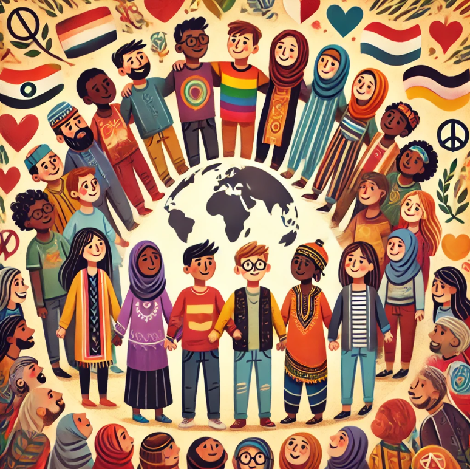
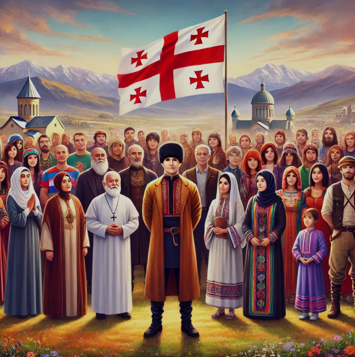
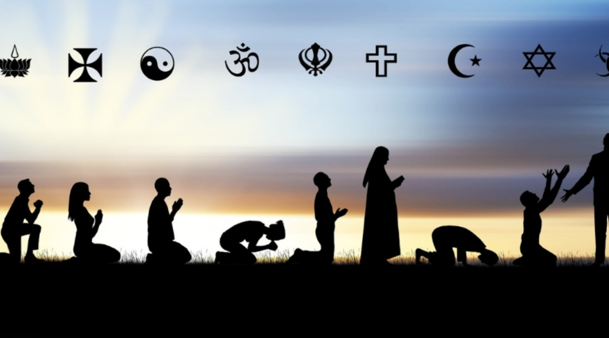
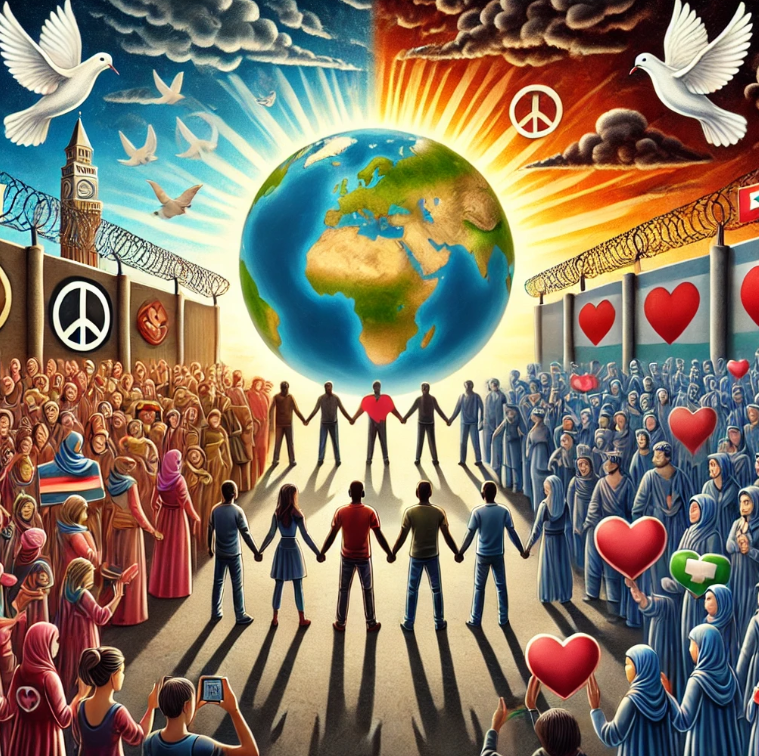
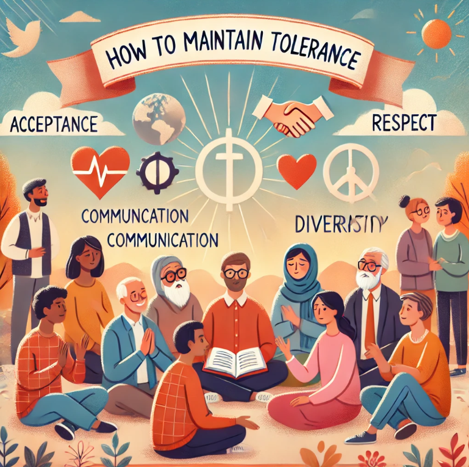

20 წელზე მეტია გაეროს გადაწყვეტილებით ტოლერანტობის საერთაშორისო დღე 16 ნოემბერს აღინიშნება და ხაზს უსვამს იმ პრინციპის მნიშვნელობას,
რაც ჩვენი ყოველდღიური ურთიერთობების საფუძველს წარმოადგენს.
საქართველოს ხელისუფლებისათვის მთავარი ღირებულებაა ადამიანი, მისი ღირსება და უფლებები. თიტოეულ ადამიანს საკუთარი იდენტობა გააჩნია, რასაც
განსზღვრავს მისი ეთნიკური თუ რელიგიური კუთვნილება, ტრადიცია, მრწამსი. შესაბამისად, ტოლერანტობა ადამიანს იდენტობის პატივისცემას და
ზოგადად, თანასწორებაზე დაფუძნებლი გარემოს ხელშეწყობას გულისხმობს
საქართველოს განსაკუთრებული ადგილი უკავია ეთნიკური, რელიგიური თუ კულტურული მრავალფეროვნების თვალსაზრისით და გააჩნია ტოლერანტულ
გარემოში მშვიდობიანი თანაცხოვრების უნიკალური, მრავალსაუკუნოვანი ტრადიცია.


დღეს ჩვენი ამოცანაა გავამყაროთ ეს ტრადიცია და ამსაფუძველზე დავაშენოთ მომავალი, სადაც ყველა მოქალაქე, განურჩევლად ეთნიკური თუ რელიგიური
კუთვნილებისა, თანასწორია და ჩართულია ქვეყნის ცხოვრების ყველა სფეროში.
რა არის ტოლერანტობა?
ტოლერანტობა არის ადამიანთა გარშემომყოფების, კულტურების, რელიგიებისა და აზროვნების განსხვავებების პატივისცემა და მიღება.
ეს არის შეუპოვრობა და კეთილგანწყობა, რომელიც გვაძლევს შესაძლებლობას ვიმუშაოთ ერთად, მიუხედავად ჩვენი განსხვავებული
წარმოსახვისა.
ასევე ტოლერანტობა არის შემწყნარებლობა, ურთიერთი პატივიცემა, თანადგომა და უნდა ვიყოთ ყველას მიმართ ემპათიურები

ტოლერანტობის მნიშვნელობა
ტოლერანტობა გვეხმარება ურთიერთგაგებას, რაც აუცილებელია მშვიდობისა და თანამშრომლობისთვის.
როდესაც ადამიანები პატივს სცემენ განსხვავებულ აზრებს და რწმენებს, ისინი ქმნიან გარშემომყოფ გარემოს,
რომელიც ხელს უწყობს პიროვნულ და სოციალურ განვითარებას.

- ის აუმჯობესებს საზოგადოებას.
- გზას აგებს მშვიდობისა და თანამშრომლობისკენ.
- მიამაგრებს ინდივიდებს ერთმანეთის გამტარებად და მზრუნველობად.
- ხელს უწყობს მრავალფეროვნების აღიარებას და მიღებას.
ტოლერანტობის გამოწვევები
მიუხედავად იმისა, რომ ტოლერანტობა გვაწვდის მნიშვნელოვან გზას უკეთესი საზოგადოებისა და ურთიერთობისკენ, არსებობს გამოწვევები:
- კულტურული მიკერძოება.
- რელიგიური და ეთნიკური დისკრიმინაცია.
- მონოზოლურობა და არასრულყოფილი განათლება.
როგორ შევინარჩუნოთ ტოლერანტობა?
ტოლერანტობის შესანარჩუნებლად უნდა იყო კარგი ადამიანი და პატივს ცემდე სხვის რელიგიას და კულტურას
ტოლერანტობის შესანარჩუნებლად მნიშვნელოვანია რამდენიმე საფუძველი:
- განსხვავებების მიღება და პატივისცემა.
- კომუნიკაცია და განათლება.
- მრავალფეროვნების აღიარება.
